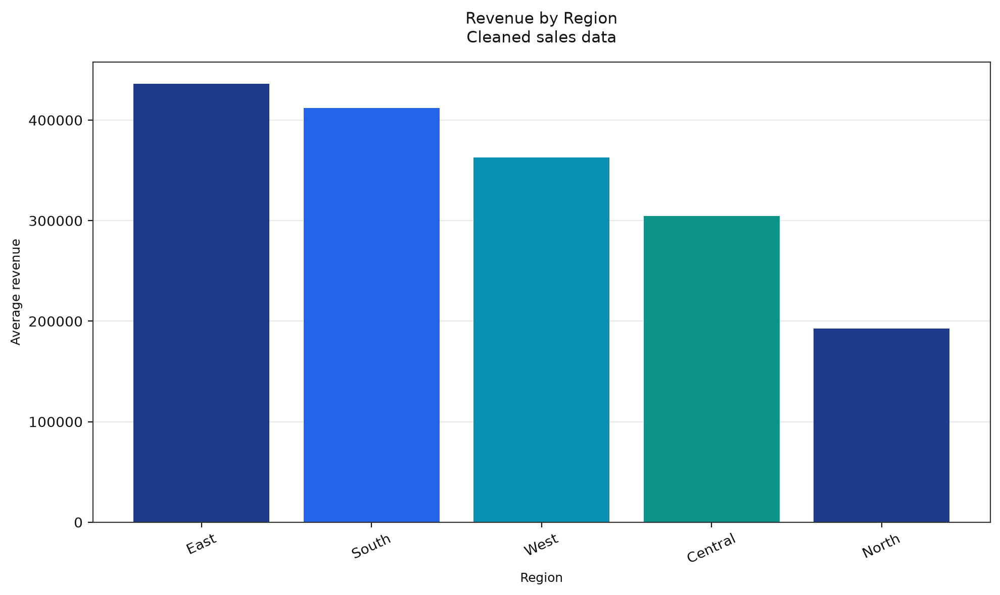
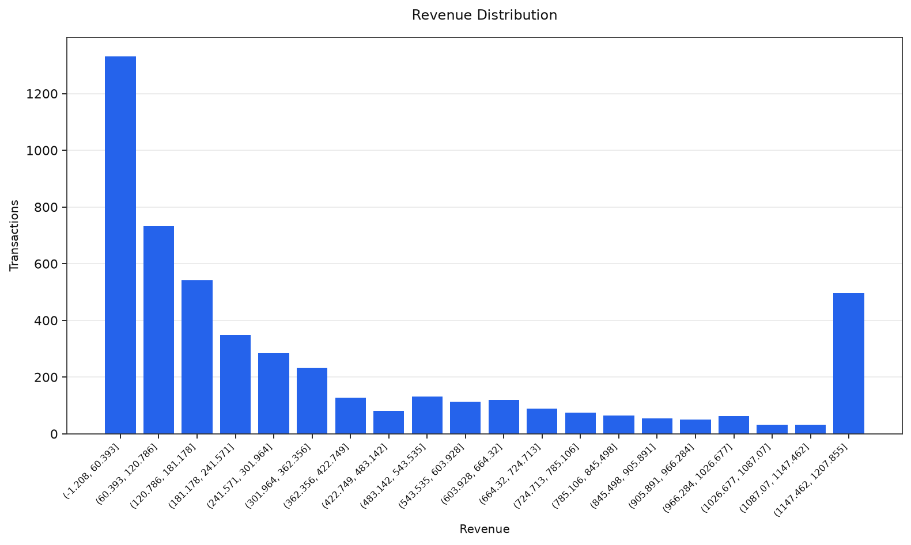
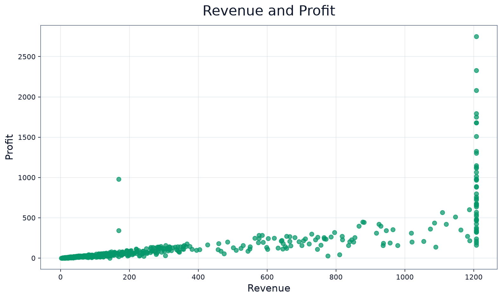
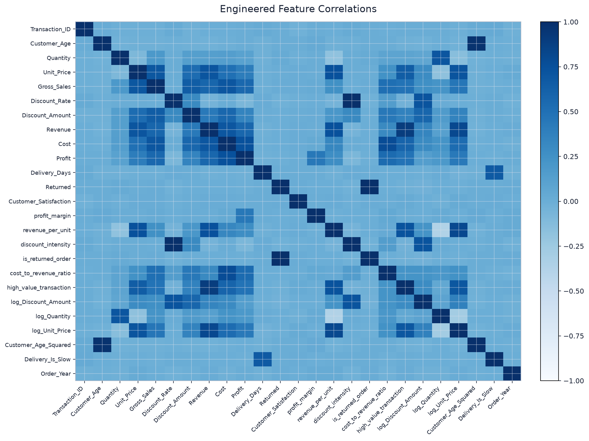

AutoDQ Executive Data Quality Report
Automated profiling, diagnosis, evidence-aware recommendations, cleaning validation, visualization, machine learning, and prediction summary.
Quality Before
Quality After
Issues Detected
Actions Successful
Quality Score Gauge
87.92 → 97.88
Overall quality score after approved cleaning actions.
Improvement: 9.96Before vs After Comparison
| Metric | Before | After | Meaning |
|---|---|---|---|
| Missing Values | 382 | 60 | Resolved 322 |
| Duplicate Rows | 33 | 0 | Removed 33 |
| Rows | 5035 | 5002 | Removed 33 |
| Columns | 23 | 23 | No structural column loss |
Before vs After Visual
Visual Cleaning Impact
Dataset Operations
No merge or concatenation operation was recorded.
Rendered Visualization Assets






Visualization Engine Output
Unsupported chart preview.
| Revenue | Profit |
|---|---|
| 89.11 | 19.22 |
| 284.09 | 111.72 |
| 31.98 | 12.75 |
| 199.58 | 52.25 |
| 209.53 | 56.2 |
| 37.6 | 5.04 |
| 168.62 | 56.17 |
| 83.0 | 18.02 |
Unsupported chart preview.
Unsupported chart preview.
Unsupported chart preview.
Unsupported chart preview.
Unsupported chart preview.
BLUE Regression Diagnostics
Suitability Score
Overall Status
Rows Analyzed
Features Analyzed
Features Used
Excluded Features
Assumption Results
BLUE Diagnostic Visual Insights
Variance Inflation Factors
| Feature | VIF | Severity | Interpretation | Recommendation |
|---|---|---|---|---|
| discount_intensity | 1267724.1107 | High | Severe multicollinearity detected. | Remove, combine, transform, or regularize correlated predictors. |
| Discount_Rate | 1267681.537 | High | Severe multicollinearity detected. | Remove, combine, transform, or regularize correlated predictors. |
| Unit_Price | 4.6289 | Low | No major multicollinearity concern. | The feature can generally remain in the model. |
| log_Unit_Price | 4.3005 | Low | No major multicollinearity concern. | The feature can generally remain in the model. |
| Cost | 4.2685 | Low | No major multicollinearity concern. | The feature can generally remain in the model. |
| Gross_Sales | 4.1406 | Low | No major multicollinearity concern. | The feature can generally remain in the model. |
| log_Discount_Amount | 4.1295 | Low | No major multicollinearity concern. | The feature can generally remain in the model. |
| log_Quantity | 2.9993 | Low | No major multicollinearity concern. | The feature can generally remain in the model. |
| Discount_Amount | 2.9048 | Low | No major multicollinearity concern. | The feature can generally remain in the model. |
| high_value_transaction | 2.8013 | Low | No major multicollinearity concern. | The feature can generally remain in the model. |
| Profit | 2.3773 | Low | No major multicollinearity concern. | The feature can generally remain in the model. |
| Quantity | 2.0729 | Low | No major multicollinearity concern. | The feature can generally remain in the model. |
BLUE Prescriptions
Practical corrective actions generated from the BLUE assumption tests, visual insights, and VIF results.
| # | Action | Category | Priority | Reason | Recommendation | Confidence | Related Assumptions |
|---|---|---|---|---|---|---|---|
| 1 | Use robust standard errors | Inference | High | The Breusch-Pagan test detected non-constant residual variance. | Use HC3 heteroscedasticity-robust standard errors for coefficient inference. Weighted least squares may also be appropriate when a variance structure can be estimated. | 95.0% | Homoscedasticity |
| 2 | Transform the target or use robust regression | Transformation | High | Residuals significantly deviate from normality. | Consider log1p, Box-Cox, or Yeo-Johnson transformation of the target. Also review extreme values and robust regression alternatives. | 90.0% | Residual Normality |
| 3 | Reduce multicollinearity | Feature Selection | High | Predictors with elevated VIF values may make coefficients unstable. | Review discount_intensity, Discount_Rate. Remove redundant features, combine related predictors, or use Ridge/Lasso regularization. | 95.0% | Multicollinearity |
| 4 | Review influential observations | Data Review | High | 331 row(s), representing 6.6174% of analyzed data, may strongly influence the fitted coefficients. | Inspect these rows for data errors, unusual groups, or valid extreme cases. Compare model results with and without them and consider robust regression. | 90.0% | Influential Observations |
BLUE Recommendations
- Review outliers, transform skewed variables, or use robust standard errors.
- Use heteroscedasticity-robust standard errors, transform the target, or consider weighted least squares.
- Investigate influential rows, possible data errors, segmentation, or robust regression.
- Review highly correlated predictors, derived variables, and target-leakage-like features.
- High-VIF predictors requiring review: discount_intensity, Discount_Rate
BLUE Warnings
- 4 feature(s) were excluded from BLUE analysis because they appeared to be identifiers, duplicates, manually excluded fields, or leakage candidates.
Machine Learning Model Summary
Best Algorithm
Target
Features Used
Predictions Stored
Model Performance Metrics
Model Comparison Leaderboard
Top Feature Importance
Model Recommendations
- Model performance is strong based on R². Review target leakage before trusting results.
- The most influential feature appears to be 'high_value_transaction'. Review whether it is valid or causes leakage.
- Regression intervals use holdout conformal calibration with 1001 observations.
- random_forest_regressor was selected as the best model based on r2.
Prediction Results
Predictions
Target
Algorithm
Problem Type
Uncertainty Method
Uncertainty Summary
| Row | Actual | Predicted | Residual | Abs Error | % Error | Confidence | Prediction Interval | Most Important Features |
|---|---|---|---|---|---|---|---|---|
| 0 | 89.11 | 89.5844 | -0.4744 | 0.4744 | 0.5324 | 90.0% | [62.9084, 116.2604] | high_value_transaction, Unit_Price, log_Unit_Price |
| 1 | 284.09 | 292.2571 | -8.1671 | 8.1671 | 2.8748 | 90.0% | [265.5811, 318.9331] | high_value_transaction, Unit_Price, log_Unit_Price |
| 2 | 31.98 | 31.9426 | 0.0374 | 0.0374 | 0.1169 | 90.0% | [5.2666, 58.6186] | high_value_transaction, Unit_Price, log_Unit_Price |
| 3 | 199.58 | 197.1557 | 2.4243 | 2.4243 | 1.2147 | 90.0% | [170.4797, 223.8317] | high_value_transaction, Unit_Price, log_Unit_Price |
| 4 | 209.53 | 210.2627 | -0.7327 | 0.7327 | 0.3497 | 90.0% | [183.5867, 236.9387] | high_value_transaction, Unit_Price, log_Unit_Price |
| 5 | 37.6 | 37.5912 | 0.0088 | 0.0088 | 0.0234 | 90.0% | [10.9152, 64.2672] | high_value_transaction, Unit_Price, log_Unit_Price |
| 6 | 168.62 | 171.4475 | -2.8275 | 2.8275 | 1.6768 | 90.0% | [144.7715, 198.1235] | high_value_transaction, Unit_Price, log_Unit_Price |
| 7 | 83.0 | 83.3833 | -0.3833 | 0.3833 | 0.4618 | 90.0% | [56.7073, 110.0593] | high_value_transaction, Unit_Price, log_Unit_Price |
| 8 | 10.22 | 11.0848 | -0.8648 | 0.8648 | 8.4618 | 90.0% | [-15.5912, 37.7608] | high_value_transaction, Unit_Price, log_Unit_Price |
| 9 | 1207.855 | 1207.855 | 0.0 | 0.0 | 0.0 | 90.0% | [1181.179, 1234.531] | high_value_transaction, Unit_Price, log_Unit_Price |
| 10 | 143.3 | 143.172 | 0.128 | 0.128 | 0.0893 | 90.0% | [116.496, 169.848] | high_value_transaction, Unit_Price, log_Unit_Price |
| 11 | 239.42 | 235.8755 | 3.5445 | 3.5445 | 1.4805 | 90.0% | [209.1995, 262.5515] | high_value_transaction, Unit_Price, log_Unit_Price |
| 12 | 192.53 | 189.3838 | 3.1462 | 3.1462 | 1.6341 | 90.0% | [162.7078, 216.0598] | high_value_transaction, Unit_Price, log_Unit_Price |
| 13 | 9.49 | 9.9693 | -0.4793 | 0.4793 | 5.0506 | 90.0% | [-16.7067, 36.6453] | high_value_transaction, Unit_Price, log_Unit_Price |
| 14 | 249.49 | 252.8691 | -3.3791 | 3.3791 | 1.3544 | 90.0% | [226.1931, 279.5451] | high_value_transaction, Unit_Price, log_Unit_Price |
| 15 | 1207.855 | 1186.5081 | 21.3469 | 21.3469 | 1.7673 | 90.0% | [1159.8321, 1213.1841] | high_value_transaction, Unit_Price, log_Unit_Price |
| 16 | 92.68 | 94.4192 | -1.7392 | 1.7392 | 1.8766 | 90.0% | [67.7432, 121.0952] | high_value_transaction, Unit_Price, log_Unit_Price |
| 17 | 44.62 | 46.0389 | -1.4189 | 1.4189 | 3.18 | 90.0% | [19.3629, 72.7149] | high_value_transaction, Unit_Price, log_Unit_Price |
| 18 | 107.39 | 108.0639 | -0.6739 | 0.6739 | 0.6275 | 90.0% | [81.3879, 134.7399] | high_value_transaction, Unit_Price, log_Unit_Price |
| 19 | 135.35 | 134.1948 | 1.1552 | 1.1552 | 0.8535 | 90.0% | [107.5188, 160.8708] | high_value_transaction, Unit_Price, log_Unit_Price |
Model Explainability
Method
Rows Explained
Global Features
Status
Global SHAP Feature Contributions
Explainability Notes
- Identifier-like transformed features were excluded from the displayed explanations.
Sample Row-Level SHAP Explanations
| Row | Prediction | Base Value | Top Contributions | Increasing Features | Decreasing Features | Explanation |
|---|---|---|---|---|---|---|
| 0 | 89.5844 | 342.8607 |
- high_value_transaction
= 0.0
| SHAP: -146.386412
(57.31%)
- log_Quantity
= 0.6931471805599453
| SHAP: -48.746701
(19.09%)
- Quantity
= 1.0
| SHAP: -47.428333
(18.57%)
- discount_intensity
= 0.1499570733568635
| SHAP: -6.714491
(2.63%)
- Discount_Rate
= 0.15
| SHAP: -2.268349
(0.89%)
|
- | high_value_transaction, log_Quantity, Quantity | The model predicted 89.58439999999995. The strongest decreasing influences were high_value_transaction, log_Quantity, Quantity. |
| 1 | 292.2571 | 342.8607 |
- high_value_transaction
= 0.0
| SHAP: -144.038286
(48.52%)
+ log_Quantity
= 1.791759469228055
| SHAP: 63.277732
(21.31%)
+ Quantity
= 5.0
| SHAP: 57.231975
(19.28%)
- log_Unit_Price
= 4.160912273160772
| SHAP: -12.00617
(4.04%)
- Unit_Price
= 63.13
| SHAP: -11.761538
(3.96%)
|
log_Quantity, Quantity | high_value_transaction, log_Unit_Price, Unit_Price | The model predicted 292.25710000000004. The strongest increasing influences were log_Quantity, Quantity. The strongest decreasing influences were high_value_transaction, log_Unit_Price, Unit_Price. |
| 2 | 31.9426 | 342.8607 |
- high_value_transaction
= 0.0
| SHAP: -170.725266
(52.88%)
- Unit_Price
= 15.99
| SHAP: -70.481561
(21.83%)
- log_Unit_Price
= 2.8326249356838407
| SHAP: -64.030035
(19.83%)
- Quantity
= 2.0
| SHAP: -6.246087
(1.93%)
+ discount_intensity
= 0.0
| SHAP: 3.829575
(1.19%)
|
discount_intensity | high_value_transaction, Unit_Price, log_Unit_Price | The model predicted 31.942600000000002. The strongest increasing influences were discount_intensity. The strongest decreasing influences were high_value_transaction, Unit_Price, log_Unit_Price. |
| 3 | 197.1557 | 342.8607 |
- high_value_transaction
= 0.0
| SHAP: -175.803769
(37.44%)
+ Quantity
= 12.0
| SHAP: 80.394873
(17.12%)
+ log_Quantity
= 2.5649493574615367
| SHAP: 77.170355
(16.44%)
- Unit_Price
= 18.48
| SHAP: -67.884337
(14.46%)
- log_Unit_Price
= 2.969388298214389
| SHAP: -58.099912
(12.37%)
|
Quantity, log_Quantity | high_value_transaction, Unit_Price, log_Unit_Price | The model predicted 197.15570000000025. The strongest increasing influences were Quantity, log_Quantity. The strongest decreasing influences were high_value_transaction, Unit_Price, log_Unit_Price. |
| 4 | 210.2627 | 342.8607 |
- high_value_transaction
= 0.0
| SHAP: -148.899948
(69.38%)
+ log_Quantity
= 1.3862943611198906
| SHAP: 18.755102
(8.74%)
+ Quantity
= 3.0
| SHAP: 17.523062
(8.17%)
- Unit_Price
= 73.52
| SHAP: -11.682482
(5.44%)
- log_Unit_Price
= 4.311067545733388
| SHAP: -10.938503
(5.1%)
|
log_Quantity, Quantity | high_value_transaction, Unit_Price, log_Unit_Price | The model predicted 210.26269999999994. The strongest increasing influences were log_Quantity, Quantity. The strongest decreasing influences were high_value_transaction, Unit_Price, log_Unit_Price. |
| 5 | 37.5912 | 342.8607 |
- high_value_transaction
= 0.0
| SHAP: -156.46345
(50.85%)
- log_Quantity
= 0.6931471805599453
| SHAP: -39.676127
(12.9%)
- Quantity
= 1.0
| SHAP: -38.631075
(12.56%)
- Unit_Price
= 41.78
| SHAP: -35.467719
(11.53%)
- log_Unit_Price
= 3.7560707036542595
| SHAP: -30.94835
(10.06%)
|
- | high_value_transaction, log_Quantity, Quantity | The model predicted 37.59119999999996. The strongest decreasing influences were high_value_transaction, log_Quantity, Quantity. |
| 6 | 171.4475 | 342.8607 |
- high_value_transaction
= 0.0
| SHAP: -158.859915
(48.39%)
- Unit_Price
= 35.5
| SHAP: -47.245687
(14.39%)
- log_Unit_Price
= 3.597312260588446
| SHAP: -41.390743
(12.61%)
+ log_Quantity
= 1.791759469228055
| SHAP: 38.563888
(11.75%)
+ Quantity
= 5.0
| SHAP: 33.86623
(10.32%)
|
log_Quantity, Quantity | high_value_transaction, Unit_Price, log_Unit_Price | The model predicted 171.44750000000008. The strongest increasing influences were log_Quantity, Quantity. The strongest decreasing influences were high_value_transaction, Unit_Price, log_Unit_Price. |
| 7 | 83.3833 | 342.8607 |
- high_value_transaction
= 0.0
| SHAP: -162.886468
(62.15%)
- Unit_Price
= 46.11
| SHAP: -39.850699
(15.21%)
- log_Unit_Price
= 3.85248529271195
| SHAP: -33.793385
(12.89%)
- Quantity
= 2.0
| SHAP: -10.440347
(3.98%)
- log_Quantity
= 1.0986122886681098
| SHAP: -10.307069
(3.93%)
|
- | high_value_transaction, Unit_Price, log_Unit_Price | The model predicted 83.38329999999998. The strongest decreasing influences were high_value_transaction, Unit_Price, log_Unit_Price. |
| 8 | 11.0848 | 342.8607 |
- high_value_transaction
= 0.0
| SHAP: -163.074404
(48.78%)
- Unit_Price
= 10.76
| SHAP: -60.470698
(18.09%)
- log_Unit_Price
= 2.464703942470481
| SHAP: -55.19093
(16.51%)
- log_Quantity
= 0.6931471805599453
| SHAP: -26.713974
(7.99%)
- Quantity
= 1.0
| SHAP: -26.098939
(7.81%)
|
- | high_value_transaction, Unit_Price, log_Unit_Price | The model predicted 11.084799999999996. The strongest decreasing influences were high_value_transaction, Unit_Price, log_Unit_Price. |
| 9 | 1207.855 | 342.8607 |
+ high_value_transaction
= 1.0
| SHAP: 642.177992
(74.01%)
+ Unit_Price
= 1013.11
| SHAP: 62.657491
(7.22%)
+ log_Unit_Price
= 6.921766659529789
| SHAP: 50.629091
(5.83%)
+ Quantity
= 5.0
| SHAP: 50.345133
(5.8%)
+ log_Quantity
= 1.791759469228055
| SHAP: 49.920903
(5.75%)
|
high_value_transaction, Unit_Price, log_Unit_Price | - | The model predicted 1207.8549999999993. The strongest increasing influences were high_value_transaction, Unit_Price, log_Unit_Price. |
Issue Breakdown
| Issue | Severity | Confidence |
|---|---|---|
| missing_values | low | 95.0% |
| duplicate_rows | low | 90.0% |
| outliers | medium | 85.0% |
Evidence-Aware Recommendations
| # | Issue | Strategy | Columns | Confidence | Reason |
|---|---|---|---|---|---|
| 1 | missing_values | median | Customer_Age | 88.0% | Diagnosis detected missing values in Customer_Age. Knowledge rule 'age' recommends median imputation. Statistics show mean=35.9423 and median=36.0. |
| 2 | missing_values | mode | Region | 80.0% | Diagnosis detected missing values in Region. Knowledge rule 'region' recommends mode imputation. |
| 3 | missing_values | review_missing_values | City | 70.0% | Diagnosis detected missing values in City. |
| 4 | missing_values | median | Revenue | 97.0% | Diagnosis detected missing values in Revenue. Knowledge rule 'revenue' recommends median imputation. Statistics show mean=507.4374 and median=169.34. Interpretation: The mean is substantially above the median, suggesting an asymmetric distribution. Interpretation: Revenue appears... |
| 5 | missing_values | median | Customer_Satisfaction | 81.0% | Diagnosis detected missing values in Customer_Satisfaction. Statistics show mean=3.923 and median=4.0. Interpretation: Customer_Satisfaction appears left-skewed. Small values may be pulling the mean downward. |
| 6 | duplicate_rows | remove_exact_duplicates | - | 92.0% | Diagnosis detected exact duplicate rows. Exact duplicates can inflate counts, distort totals, and bias analysis. |
| 7 | outliers | domain_range_check | Customer_Age | 86.0% | Diagnosis detected outlier behavior in Customer_Age. Knowledge rule 'age' recommends domain_range_check. Statistics show skewness=0.4479 and kurtosis=0.7825. |
| 8 | outliers | review_or_cap | Quantity | 96.0% | Diagnosis detected outlier behavior in Quantity. Knowledge rule 'quantity' recommends review_or_cap. Statistics show skewness=17.1418 and kurtosis=408.8754. Interpretation: Quantity appears right-skewed. Large values may be pulling the mean upward. Interpretation: Quantity has he... |
| 9 | outliers | review_or_winsorize | Unit_Price | 96.0% | Diagnosis detected outlier behavior in Unit_Price. Knowledge rule 'unit_price' recommends review_or_winsorize. Statistics show skewness=8.702 and kurtosis=184.8562. Interpretation: Unit_Price appears right-skewed. Large values may be pulling the mean upward. Interpretation: Unit_... |
| 10 | outliers | review_or_treat_outliers | Gross_Sales | 86.0% | Diagnosis detected outlier behavior in Gross_Sales. Statistics show skewness=12.6195 and kurtosis=270.8405. Interpretation: Gross_Sales appears right-skewed. Large values may be pulling the mean upward. Interpretation: Gross_Sales has heavy-tailed behavior, suggesting extreme val... |
| 11 | outliers | domain_range_check | Discount_Rate | 96.0% | Diagnosis detected outlier behavior in Discount_Rate. Knowledge rule 'discount' recommends domain_range_check. Statistics show skewness=2.1336 and kurtosis=16.6757. Interpretation: Discount_Rate appears right-skewed. Large values may be pulling the mean upward. Interpretation: Di... |
| 12 | outliers | domain_range_check | Discount_Amount | 96.0% | Diagnosis detected outlier behavior in Discount_Amount. Knowledge rule 'discount' recommends domain_range_check. Statistics show skewness=8.8036 and kurtosis=113.0272. Interpretation: Discount_Amount appears right-skewed. Large values may be pulling the mean upward. Interpretatio... |
| 13 | outliers | review_or_winsorize | Revenue | 96.0% | Diagnosis detected outlier behavior in Revenue. Knowledge rule 'revenue' recommends review_or_winsorize. Statistics show skewness=13.224 and kurtosis=295.8814. Interpretation: Revenue appears right-skewed. Large values may be pulling the mean upward. Interpretation: Revenue has h... |
| 14 | outliers | review_or_treat_outliers | Cost | 86.0% | Diagnosis detected outlier behavior in Cost. Statistics show skewness=5.5726 and kurtosis=43.045. Interpretation: Cost appears right-skewed. Large values may be pulling the mean upward. Interpretation: Cost has heavy-tailed behavior, suggesting extreme values may strongly influen... |
| 15 | outliers | review_or_winsorize | Profit | 96.0% | Diagnosis detected outlier behavior in Profit. Knowledge rule 'profit' recommends review_or_winsorize. Statistics show skewness=11.164 and kurtosis=245.3158. Interpretation: Profit appears right-skewed. Large values may be pulling the mean upward. Interpretation: Profit has heavy... |
| 16 | outliers | review_or_treat_outliers | Delivery_Days | 79.0% | Diagnosis detected outlier behavior in Delivery_Days. Statistics show skewness=0.8642 and kurtosis=0.6586. Interpretation: Delivery_Days appears right-skewed. Large values may be pulling the mean upward. |
Cleaning Actions Table
| Action | Issue | Strategy | Status | Columns | Rows Before | Rows After | Message |
|---|---|---|---|---|---|---|---|
| 1 | missing_values | median | success | Customer_Age | 5035 | 5035 | Applied median missing-value handling. |
| 2 | missing_values | mode | success | Region | 5035 | 5035 | Applied mode missing-value handling. |
| 3 | missing_values | review_missing_values | success | City | 5035 | 5035 | Applied review_missing_values missing-value handling. |
| 4 | missing_values | median | success | Revenue | 5035 | 5035 | Applied median missing-value handling. |
| 5 | missing_values | median | success | Customer_Satisfaction | 5035 | 5035 | Applied median missing-value handling. |
| 6 | duplicate_rows | remove_exact_duplicates | success | - | 5035 | 5002 | Removed 33 duplicate row(s). |
| 7 | outliers | domain_range_check | skipped | Customer_Age | 5002 | 5002 | Strategy is not executable yet. Manual review required. |
| 8 | outliers | review_or_cap | skipped | Quantity | 5002 | 5002 | Strategy is not executable yet. Manual review required. |
| 9 | outliers | review_or_winsorize | skipped | Unit_Price | 5002 | 5002 | Strategy is not executable yet. Manual review required. |
| 10 | outliers | review_or_treat_outliers | skipped | Gross_Sales | 5002 | 5002 | Strategy is not executable yet. Manual review required. |
| 11 | outliers | domain_range_check | skipped | Discount_Rate | 5002 | 5002 | Strategy is not executable yet. Manual review required. |
| 12 | outliers | domain_range_check | skipped | Discount_Amount | 5002 | 5002 | Strategy is not executable yet. Manual review required. |
| 13 | outliers | review_or_winsorize | skipped | Revenue | 5002 | 5002 | Strategy is not executable yet. Manual review required. |
| 14 | outliers | review_or_treat_outliers | skipped | Cost | 5002 | 5002 | Strategy is not executable yet. Manual review required. |
| 15 | outliers | review_or_winsorize | skipped | Profit | 5002 | 5002 | Strategy is not executable yet. Manual review required. |
| 16 | outliers | review_or_treat_outliers | skipped | Delivery_Days | 5002 | 5002 | Strategy is not executable yet. Manual review required. |
Interactive Cleaning Review
Approved
Rejected
Pending
Domain Violations
Remaining Outliers
Audit Entries
Recent Cleaning Audit Trail
| ID | Event | Action | Row | Column | Reason |
|---|---|---|---|---|---|
| 485 | outlier_treatment | - | 4960 | Revenue | Cap reviewed revenue extremes at the IQR bounds |
| 486 | outlier_treatment | - | 4976 | Revenue | Cap reviewed revenue extremes at the IQR bounds |
| 487 | outlier_treatment | - | 4977 | Revenue | Cap reviewed revenue extremes at the IQR bounds |
| 488 | outlier_treatment | - | 4993 | Revenue | Cap reviewed revenue extremes at the IQR bounds |
| 489 | outlier_treatment | - | 5007 | Revenue | Cap reviewed revenue extremes at the IQR bounds |
| 490 | outlier_treatment | - | 5025 | Revenue | Cap reviewed revenue extremes at the IQR bounds |
| 491 | cleaning_action_executed | 1 | - | - | - |
| 492 | cleaning_action_executed | 2 | - | - | - |
| 493 | cleaning_action_executed | 3 | - | - | - |
| 494 | cleaning_action_executed | 4 | - | - | - |
| 495 | cleaning_action_executed | 5 | - | - | - |
| 496 | cleaning_action_executed | 6 | - | - | - |
| 497 | cleaning_action_executed | 7 | - | - | - |
| 498 | cleaning_action_executed | 8 | - | - | - |
| 499 | cleaning_action_executed | 9 | - | - | - |
| 500 | cleaning_action_executed | 10 | - | - | - |
| 501 | cleaning_action_executed | 11 | - | - | - |
| 502 | cleaning_action_executed | 12 | - | - | - |
| 503 | cleaning_action_executed | 13 | - | - | - |
| 504 | cleaning_action_executed | 14 | - | - | - |
| 505 | cleaning_action_executed | 15 | - | - | - |
| 506 | cleaning_action_executed | 16 | - | - | - |
| 507 | domain_validation | - | - | - | - |
| 508 | outlier_review | - | - | - | - |
| 509 | domain_validation | - | - | - | - |
Generated Dashboard
AutoDQ Sales Analytics · Engineered stage · 8 visualization(s) · 25 preview row(s)
Rows
Columns
Quality score
Missing cells
Duplicate rows
ADQL Query History
| Source | Status | Statements | Completed | Failed | Duration |
|---|---|---|---|---|---|
| /Users/admin/Desktop/Auto DQ/autodq-analytics/examples/sales_analysis.adql#cell=16 | Completed | 1 | 1 | 0 | 0.9378s |
| /Users/admin/Desktop/Auto DQ/autodq-analytics/examples/sales_analysis.adql#cell=15 | Completed | 4 | 4 | 0 | 0.6106s |
| /Users/admin/Desktop/Auto DQ/autodq-analytics/examples/sales_analysis.adql#cell=14 | Completed | 3 | 3 | 0 | 2.7934s |
| /Users/admin/Desktop/Auto DQ/autodq-analytics/examples/sales_analysis.adql#cell=13 | Completed | 1 | 1 | 0 | 0.0034s |
| /Users/admin/Desktop/Auto DQ/autodq-analytics/examples/sales_analysis.adql#cell=12 | Completed | 3 | 3 | 0 | 9.0405s |
| /Users/admin/Desktop/Auto DQ/autodq-analytics/examples/sales_analysis.adql#cell=11 | Completed | 3 | 3 | 0 | 0.5022s |
| /Users/admin/Desktop/Auto DQ/autodq-analytics/examples/sales_analysis.adql#cell=10 | Completed | 4 | 4 | 0 | 0.0100s |
| /Users/admin/Desktop/Auto DQ/autodq-analytics/examples/sales_analysis.adql#cell=9 | Completed | 1 | 1 | 0 | 0.0046s |
| /Users/admin/Desktop/Auto DQ/autodq-analytics/examples/sales_analysis.adql#cell=8 | Completed | 1 | 1 | 0 | 0.0099s |
| /Users/admin/Desktop/Auto DQ/autodq-analytics/examples/sales_analysis.adql#cell=7 | Completed | 7 | 7 | 0 | 0.0229s |